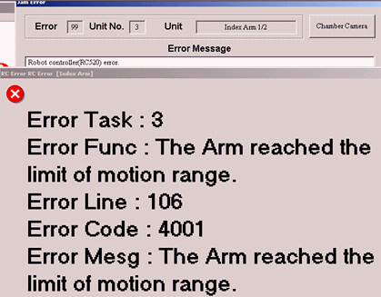
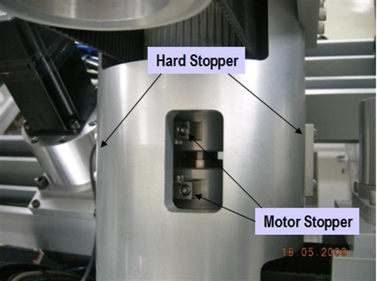

Service History
Subject: TR-60 Index Hand return error, Error 4001 The arm reached the limit of motion range
Handler Model: TR60 (S/N:121175) NEC
Controller: RC520 ( S/N: 01-20947) 3 DU
Date: 19 May 2009
Symptom
NEC TR-60
the problem happened during the technician try to check and change contact blade for both arm ( 16th May'09 ). This is due to the machine is under breakdown for DEVICE DROP ( ARM 2 ). For your information, this time our technician didn't use the CONTACT EXCHANGE MODE function to replace the contact blade. Technician just manually move the index arm by rotating it to left and right.
After complete checking & replace the parts, technician try to do the SOAK CLEAN MODE since all the device still inside the SOAK BOAT. Before that, technician press the HOME button and Input & Output Arm move to origin except the INDEX ARM ( Please confirm if this is normal for TR60 operation ? ) .
Then when press START button, INDEX ARM move and the error come out. ( refer to slide 1 & 2 ).
Slide 1

Slide 2
I've take some photo during Index Arm in-line with Socket & Soak Boat ( slide 3 ) and also position of INDEX ARM when this error happen ( slide 4 ).
|
|
 Slide 3 |
|
|
Slide 4 |
I've done the calibration by referring to Maintenance Manual but still not able to solve the problem.
Action
TR60 able to resume back to production on yesterday night.
About the proper procedure, I think what had been done by the technician was not wrong. The reason he didn't used Contact Exchange Mode because of additional job need to be done in order to use this function and also one part might become NG. Please refer to attachment for better explanation, Interface board.ppt.
As NECM has some concerning to have interference between socket sensor and contactor, may need to consider to modify the interface board so that the sensor position is shifted.
For your information, last year ( around May'08 ) we had faced the same problem with the Index Arm and this is the second time where the same problem happen again.
In my opinion, Epson need to improve the design at Hand Bracket area for better grip and hold the motor's shaft. For the existing design, there's still a possibility for Index Arm 1 or 2 to slip from original position.
Cause